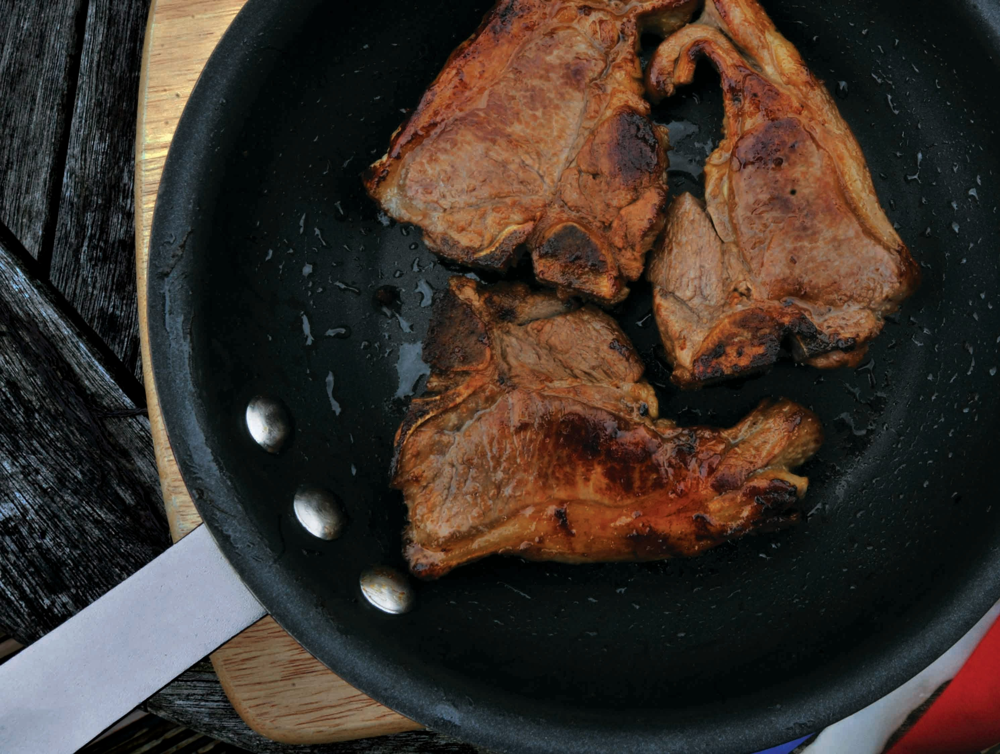

Feel free to sample our Recipes
Grilled chicken

INGREDIENTS(some)
1/4 c. balsamic vinegar
3 Tbsp. extra-virgin olive oil
4 chicken breasts
Freshly chopped parsley, for garnish
PROCEDURE
Step 1
In a medium bowl, whisk together balsamic vinegar, olive oil, brown sugar, garlic, and dried herbs, and season generously with salt and pepper. Reserve ¼ cup.
Step 2
Add chicken to the bowl and toss to combine. Let marinate at least 20 minutes and up to overnight.
Step 3
Preheat grill to medium high. Add chicken and grill, basting with reserved marinade, until cooked through, 6 minutes per side.
Step 4
Garnish with parsley before serving.
lamb chops
INGREDIENTS(some)
8 lamb loin or rib chops (1-inch thick) 1 tablespoon chopped fresh thyme leaves, plus 1 large sprig 3/4 teaspoon kosher salt, divided 1/4 teaspoon freshly ground black pepper 4 tablespoons unsalted butter, divided PROCEDURE1. Remove the lamb chops from the refrigerator and massage the chopped thyme, 1/2 teaspoon of the salt, and pepper into the meat. Set the lamb chops aside at room temperature for 5 minutes.
2.Melt 2 tablespoons of the butter in a 12-inch skillet over medium-high heat. Add the lamb chops and cook until a rich, brown crust forms on the bottom, 4 to 6 minutes (if you're using thicker lamb chops, this could take up to 10 minutes).
3. Cook until reduced by half, 1 to 2 minutes. Stir in the lemon zest, remaining 1/4 teaspoon salt, and 2 tablespoons butter. Cook until the butter melts and the sauce thickens slightly, about 1 minute. Taste and season with more salt and pepper if needed. Pour the sauce over the lamb chops and serve immediately.
spagheti carbona

INGREDIENTS
400g spaghetti
1 tbsp olive oil
200g sliced Primo Gourmet Selection Pancetta, cut into 1cm-wide strips
2 garlic cloves, finely chopped
Coles Australian Free Range Eggs, plus 1 extra yolk
3100ml thickened cream
2/3 cup (50g) freshly grated parmesan, plus extra to serve
2 tbsp chopped flat-leaf parsley leaves
PROCEDURE
Step 1 Cook pasta in a large pan of boiling salted water according to the packet instructions. Meanwhile, heat oil in a frypan over medium heat. Cook pancetta, stirring, for 2-3 minutes until beginning to crisp. Add garlic for 30 seconds, then set pan aside.
Place eggs and extra yolk , cream and parmesan in a bowl. Season, then mix gently with a fork. Drain pasta, then return to pan. Quickly add egg and pancetta mixtures and parsley. Toss to combine - the heat from the pasta will cook the egg slightly and form a creamy sauce. Serve immediately with extra parmesan.
Sample our recipes and tag us on your favourite social media platforms